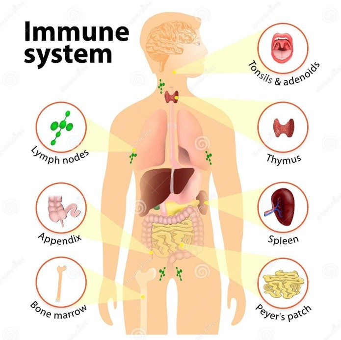

Perhatikan gambar dan bacalah penjelasan dibawah ini!
-
Organ Sistem Pertahanan Tubuh

Gambar 5. Organ Sistem Pertahanan Tubuh
(Sumber: ttsz, 2015)
Penjelasan Fungsi Organ-organ Sistem Pertahanan Tubuh:
- a) Tonsils and Adenoids (Tonsil dan Adenoid): Melindungi tubuh dari patogen yang masuk melalui mulut atau hidung. Tonsil adalah bagian dari sistem limfatik yang membantu menangkap bakteri atau virus.
- b) Thymus (Timus): Tempat pematangan limfosit T, yang berperan penting dalam imunitas adaptif. Timus membantu melatih sel imun untuk mengenali antigen yang spesifik.
- c) Lymph Nodes (Nodus Limfa): Menyaring cairan limfa dari patogen dan partikel asing. Nodus limfa mengaktifkan sel darah putih untuk melawan infeksi.
- d) Spleen (Limpa): Menghilangkan sel darah merah yang rusak dan menghasilkan sel darah putih untuk melawan infeksi. Limpa juga menyimpan trombosit dan antibodi.
- e) Appendix (Usus Buntu): Meskipun kecil, appendix berperan dalam imunitas dengan membantu mendukung populasi bakteri baik di usus dan mendukung jaringan limfatik di dekatnya.
- f) Bone Marrow (Sumsum Tulang): Tempat produksi sel darah, termasuk sel darah putih (leukosit) yang merupakan komponen utama sistem imun.
- g) Peyer’s Patch (Plak Peyer): Terletak di usus halus, struktur ini membantu memonitor dan melawan mikroorganisme yang masuk melalui saluran pencernaan.
Setelah memperhatikan gambar dan membaca teks diatas, jawablah pertanyaan berikut dengan
mengklik link gform dibawah ini: